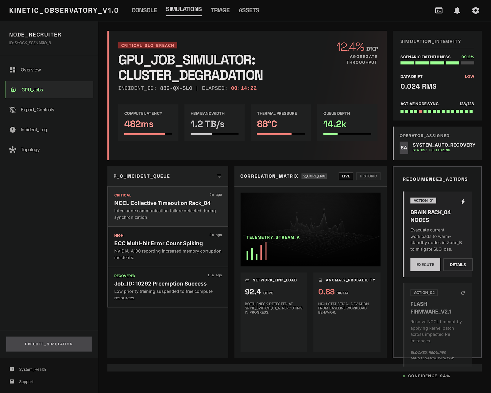

PF SAFE DEMO · 2026-03-18-p003
GPU Job SLO Incident Simulator
Simulate queue failures and degraded nodes to see how they burn error budget and threaten job deadlines.
ingest status
Imported from Stitch exportOriginal Stitch output is archived while the public demo uses a dependency-light PF-safe viewer with the approved screen.
- Source preserved as local artifact
- Public demo path avoids remote CDN dependency
- Preview uses the shipped Stitch screen
